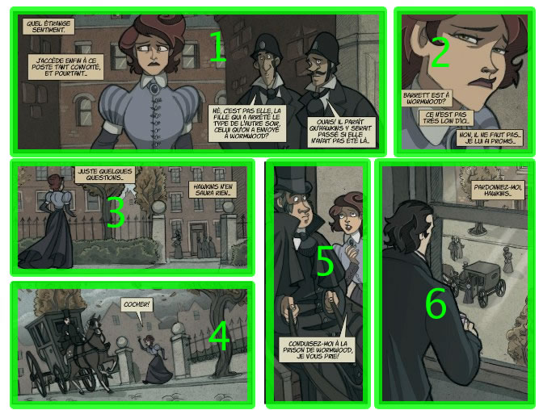
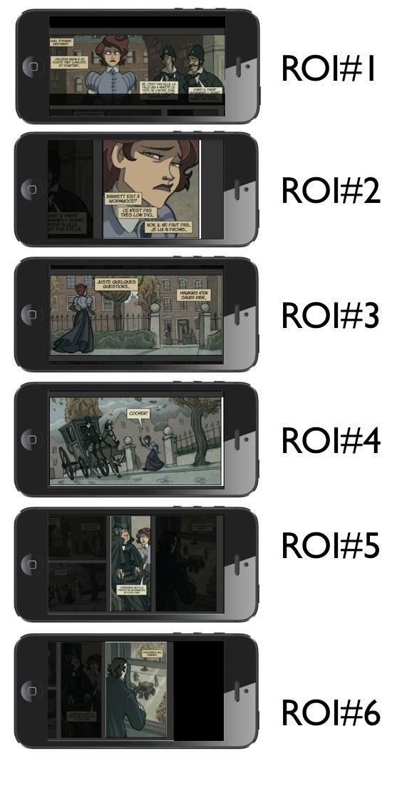
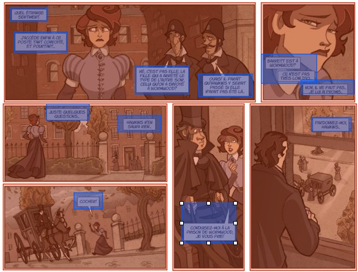
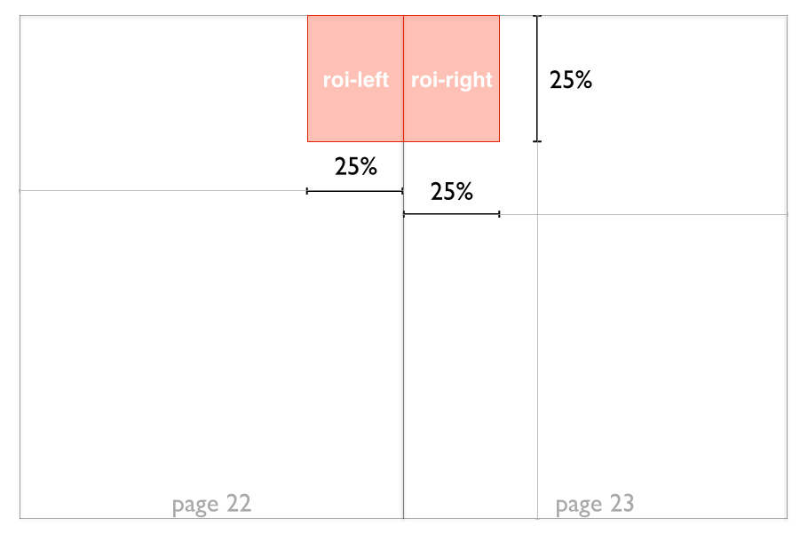

All rights reserved. This work is protected under Title 17 of the United States Code. Reproduction and dissemination of this work with changes is prohibited except with the written permission of the International Digital Publishing Forum (IDPF).
EPUB is a registered trademark of the International Digital Publishing Forum.
Editors
Matthieu Kopp, Aquafadas
Brady Kroupa, Barnes & Noble
Jim Lester, Barnes & Noble
Matt Garrish, Invited Expert
Authors
Garth Conboy, Google
Brady Duga, Google
Hadrien Gardeur, Feedbooks
Takeshi Kanai, Sony
MURATA Makoto, JEPA
Edward O’Connor, Apple
Status of this Document
This section describes the status of this document at the time of its publication. Other documents may supersede this document.
This document has been reviewed by the IDPF membership and is endorsed by the IDPF Board as a Recommended Specification. This document
is considered stable and may be referenced from other specifications and documents.
Feedback on this document can be provided to the EPUB Working Group's mailing list
or issue tracker.
This specification, EPUB Region-Based Navigation, introduces conventions for region-based navigation through a visual rendition of a Publication based on Regions of Interest. It introduces the EPUB® Data Navigation Document for defining purely machine-processable navigation components, and defines a new intra-document navigation type to allow reading progression at the sub-page level.
This document does not specify how such region-based navigation is required to behave, but rather allows different Reading Systems to provide different behaviors.
1.2 Terminology
Refer to the EPUB Specifications for definitions of EPUB-specific terminology used in this document.
Region of Interest (also Region)
An area of a EPUB Content Document, whether the entire document or a geometric region within it, that can be presented in isolation without losing its meaning, or its meaning within the context of the document.
Synthetic Region
A synthetically-generated Region formed from two adjacent Regions that span a Synthetic Spread. See 3.5.2 Synthetic Regions.
1.3 Conformance Statements
The keywords must, must not, required, shall, shall not, should, should not, recommended, may, and optional in this document are to be interpreted as described in [RFC2119].
All sections of this specification are normative except where identified by the informative status label "This section is informative". The application of informative status to sections and appendices applies to all child content and subsections they may contain.
All examples in this specification are informative.
2. The Data Navigation Document
2.1 Introduction
This section is informative
The EPUB Navigation Document is a User-facing document that allows access to the links in any navigation component within it, regardless of whether the component is defined in an IDPF specification or a custom component defined by an Author.
The required structure enforced on nav elements to ensure that the links can always be easily accessed does not lend itself to navigation components that are not intended for direct User consumption, however. The region-based nav element defined in this specification is one example of a navigation component intended to influence Reading System navigation without the links being directly accessible to Users, and that does not lend itself to the existing content restrictions.
To address the need for purely machine-processable navigation components, this specification introduces a new type of navigation document ‒ the Data Navigation Document ‒ which removes the restrictions of the EPUB Navigation Document.
› It must ignore navigation components whose epub:type attribute specifies an unrecognized type.
› It should not provide direct access to any navigation component unless the component's definition allows such.
2.4 Data Navigation Document Definition
Each navigation component in the Data Navigation Document must be defined in a separate [HTML5]nav element. Each nav element must have an epub:type attribute [ContentDocs301] that identifies the nature of the navigation component it contains.
This specification enforces no requirements on the contents of the nav elements; each specification that defines a navigation component for inclusion in the Data Navigation Document can define its own content model.
As the Data Navigation Document is not intended for direct User consumption, it should not be included in the spine.
2.5 Identification
The Data Navigation Document is identified in the EPUB Package Document manifest [Publications301] by the property "data-nav".
The manifest must not include more than one XHTML Content Document identified as a Data Navigation Document.
3. Region-based Navigation
3.1 Introduction
This section is informative
The ability to create a guided reading experience through the content of a Publication is an important requirement in comics, manga, magazines, and other forms of image-based content, both because screen sizes often limit how much of the content can be displayed to a User at any given time and because intra-page navigation may not follow a simple linear progression.
In its simplest form, region-based navigation can be represented as an ordered sequence of Regions of Interest that a Reading System will render in turn as the User navigates through the work. There can be one or more of these sequences to a document (e.g., panels in a comic, articles in a magazine), and each sequence can include nested subregions of interest, such as speech balloons, to be navigated as part of the guided flow.
For example, consider this typical page of a comic, which consists of six distinct panels of content:
The natural reading flow is left-to-right and top-to-bottom, with the two panels in the lower left having to be read top-to-bottom before moving to the next panel to the right. The logical progression through these panels—the sequence in which to view each Region—can thus be delineated as follows:

If this complete image were scaled to a small device screen, such as a cellphone, each of the individual panels would be very difficult to read, bordering on illegible. By breaking the image down into its constituent Regions as above, however, a Reading System on such a device could instead navigate to each in turn as the User progresses through the work, thereby maximizing the visibility of each panel.
The Reading System might constrain and center each panel within the viewport automatically, with content on screen that is not a part of the Region potentially being obscured with a transparent letterboxing or not shown at all.
The following image shows how the Regions of Interest (abbreviated ROI in the example) could be focused on a cellphone screen, using a semi-transparent letterboxing effect to obscure the surrounding areas:

To enable this form of region-based navigation in EPUB 3, this specification defines the Data Navigation Document and adds to it the region-based nav type. It also adds optional semantics to identify Regions. This section covers these new features and how they can be used to enable the kind of region-based navigation experience explained above.
3.2 Content Conformance
A conformant Region-Based Navigation component must meet all of the following requirements:
› If the Reading System supports navigation through subregions, it must adhere to all requirements defined in 3.4.4 Subregion Navigation.
3.4 The region-based nav Element
3.4.1 Introduction
This section is informative
This specification defines a region-based navigation element for inclusion in the Data Navigation Document. The sequence of list items in this navigation element defines a possible path through the content at a more granular level than the spine[Publications301] allows, where each descendant link defines a unique Region of Interest in the path.
This navigation type is defined to enable a Reading System to change the way that forward and backward progression through the content occurs (i.e., it overrides spine navigation). Consequently, the links are designed not to be directly accessible.
3.4.2 Content Model
The region-based navigation element is defined in an [HTML5]nav element that carries the epub:type attribute[ContentDocs301] value "region-based". At the root of the region-based navmust be exactly one [HTML5]ol element.
Each list item child of the root ol element represents a Region of Interest, the location and dimensions of which are expressed in the href attribute of a child [HTML5]a element. A child [HTML5]span element may be used instead of an a element to define Synthetic Regions.
The IRI [RFC3987] defined in the href attribute must reference a Fixed-Layout Document, and may specify a Region of Interest as described in 3.5 Defining Regions of Interest.
As the links in the region-based nav are not designed to be directly selectable by Users, descendant a elements should not contain text labels.
The following example shows a region-based nav with only one level of navigation. Each a element is empty as the Reading System automatically maps forward navigation to each in turn.
Note that although RDFa attributes are used to express the metadata, RDFa processing of the region-based nav is optional.
The a or span element may be followed by a single sibling ol element, which represents sub-navigation within that region. Refer to 3.4.4 Subregion Navigation for more information.
Authors may include more than one region-based nav element in the Data Navigation Document, but Reading Systems must treat the first region-based nav in the document as the default for navigation.
Each subsequent region-based nav element must include a descriptive title in a title attribute. Reading Systems should present these titles to Users when providing the option to select an alternative guided view.
The following example shows a region-based nav element with a descriptive title and another that indicates a reading-specific preference.
When Region-based navigation is activated, a Reading System must map User navigation actions to progression through the topmost ordered list.
The nestable structure of ordered lists in the region-based nav represents ever more granular Regions of Interest (i.e., Regions within Regions). Reading Systems that support this nav type must support navigation via the list items of the topmost ordered list in the nav, in the sequence in which they have been ordered, and must present the Regions identified in these list items such that they take up the maximum available space in the viewport.
Support for navigation via subregions (nested ordered lists) is optional.
The following example shows the identification of subregions within a Region.
A Reading System that supports subregion navigation should skip the parent nodes and therefore display the subregions directly. If the intent of the authoring of navigation for that document is to guarantee that the full panel is displayed before showing the individual regions, then an additional child node should be added to the list, as discussed in Appendix A. The Reading System should ignore the parent nodes when traversing the hierarchy.
Reading Systems that support subregion navigation may merge subregions. Merging is a way for Reading Systems to minimize the pan and zoom required to show all regions of the navigation sequence.
Merging should only happen between siblings to allow the specification of a regional scope for merging subregions. In the example above, ensuring that R2 and R3 are not merged by the Reading System is achieved simply by adding another hierarchy level.
The following example shows the control of merging between subregions.
In the above example, R1 and R2 can be merged together if the Reading Systems decides that the screen size does allow for the two regions to be shown at once. The same applies to R3 and R4.
3.4.4 Subregion Navigation
This specification does not define behaviors for subregion navigation, but, to assist navigation, the epub:type attribute [ContentDocs301]may be attached to any [HTML5]li element to indicate the specific nature of structure being navigated. Reading Systems may use these semantics to optimize the handling of different subregion types.
The following example shows the identification of two speech balloons within a Region that is being identified as a comics panel.
The following example shows a navigation sequence that includes child Regions within the panels.
Consider again the SVG image from the introduction, but this time focusing on the regions inside each panel:

There are four text balloons inside Region 1, two inside each of Region 2 and 3, and one in each of the remaining three Regions. The following markup shows how these subregions can be marked up using nested ordered lists:
From this hierarchical navigation sequence, the basic Reading System behavior would be to first show each parent Region in full and then navigate to the child Regions in sequence. Since there is no extra information about these child Regions (i.e., no epub:type attribute specified), the Reading System will simply go in sequence from one to the other.
For Region 1, the display sequence would be:
An example of the use of epub:type attributes in the context of a magazine content referencing the EPUB 3 Magazine Vocabulary [MagazineVocab] is given in the Appendix B.
3.5 Defining Regions of Interest
3.5.1 Media Fragments
3.5.1.1 Rectangular Regions
When referencing into Fixed-Layout Documents, rectangular Regions can be specified using the following media fragment [MediaFrag] syntax:
#xywh=percent:#,#,#,#
The x and y coordinates of the top-left corner the Region, and width (w) and height (h) of the rectangle, are represented in terms of a percentage of the document's ICB dimensions[ContentDocs301].
The following example shows a series of rectangular regions, two separate ones on the first page and one on the second.
A circular Region is denoted by the media fragment [MediaFrag] name "xyr". The value is an optional format pixel or percent (defaulting to pixel) and 3 comma-separated integers. The integers denote x, y, and radius, respectively, with x=0, y=0 being the top left corner of the Fixed-Layout Document. The radius value is interpreted as a percentage of the width of the document's ICB dimensions[ContentDocs301].
A polygonal Region is denoted by the media fragment [MediaFrag] name "xyn". The value is an optional format pixel or percent (defaulting to pixel) and an even number of integers. The (2i-1)-th and 2i-th integers denote x and y of the i-th point, respectively, with x=0, y=0 being the top left corner of the Fixed-Layout Document.
If percent is used, (2i-1)-th is interpreted as a percentage of the original width of the document (using its ICB dimensions[ContentDocs301]), and 2i-th integer is interpreted as a percentage of the original height.
The following example shows a triangular region that begins halfway down the left margin of a page (0,50), has its top point halfway across the page at the top margin (50,0), and concludes halfway down the right margin (100,50).
While individual Regions of Interest do not support the definition of Regions that span across pages in a Synthetic Spread, Authors can define such Synthetic Regions using an [HTML5]span element.
The spanmust contain exactly two [HTML5]a elements, where each a element references one of the adjacent Regions. For example, a Synthetic Region could be defined as follows:
<li>
<span>
<a href="page22.xhtml#xywh=percent:75,0,25,25"></a> // left region
<a href="page23.xhtml#xywh=percent:0,0,25,25"></a> // right region
</span>
</li>
The above markup represents half a panel on page 22 (the left side), and the other half on page 23 (the right side).
Reading System support for Synthetic Regions is optional. A Reading System that supports Synthetic Regions might continue to show the Regions separately in portrait orientation, but could present them as a single merged Region spanning two pages in landscape.

3.5.3 SVG Regions
Regions of Interest can be represented in SVG Content Documents and SVG fragments in XHTML Content Documents using shapes[SVG].
For example, the following link includes a reference to an element within the SVG:
The region-based nav allows each Region of Interest to be annotated with content metadata. This metadata identifies significant features of the Region so that Reading Systems can more intelligently render the content (e.g., matching the background color to complement the Region).
3.6.2 Metadata Properties
The metadata properties are expressed using [RDFa11] attributes on child [HTML5]meta elements of the a element that identifies the Region.
The "ahl:" prefix used in this section is bound to the IRI "http://www.idpf.org/epub/vocab/ahl".
To use the properties defined in this section in the Data Navigation Document, the ahl: prefix must be declared using the [RDFa11]prefix attribute. This declaration is typically included on the region-based nav root, but can be included on any ancestor element (e.g., the [HTML5]body or root html elements). For example:
The Cardinality fields in the following tables indicate the number of times the property can be included as the child of an a element.
Property Name:
ahl:primary-color
Description:
Identifies the main color of the Region.
For example, in a zoomed-in Region of a comic panel, the primary color may be light or white, so this value could be “#ffffff”. The Reading System could then use this information to set the background color to white to make it complement the Region.
The first list item defines the panel (P1) and each list item in the nested ordered list defines one of the three subregions R1, R2 and R3 within that panel.
When this panel is viewed in a Reading System that supports region-based navigation, the following narration progression would occur through the three primary regions:
Since the Reading System is expected to skip the full panel when moving through subregions, the transition from the previous page would immediately show subregion R1 (i.e., panel P1 is skipped).
In order view the full panel before or after seeing all the details, a subregion matching the geometry of the panel has to be inserted. Subregion R4 in the initial graphic is an example, and could be included with the other regions in the nested list as follows:
The Reading Systems would now include the scaled panel after the third subregion as illustrated in the following graphic:
A.2 Synthetic Regions on Synthetic Spreads
The following image shows subregions that alternate from left to right as the User moves from top to bottom. Complicating navigation is that the each adjacent region is on a separate page in a synthetic spread:
In order to allow the reader to both move from subregion to subregion, but also provide flexibility for the Reading System to combine the adjacent subregions into a single Synthetic Region for viewing (if there is space), Synthetic Regions can be identified by wrapping each pair of adjacent subregion definitions span elements, as shown in the following code:
In the case of right-to-left reading, the Reading System could adopt the reverse progression through the text region using this same information. It might have to add some additional metadata to those regions, however, particularly for "article-text" regions which contain the bulk of the text.
In the case of a multi-page article, subregions would be used to define the boundaries of the article on each page, as in the following example:
The markup for each of these article regions and their subregions would look like this:
<nav epub:type="region-based">
<ol>
<li> // the region sequence for the region-sequence #1 on pages 2,3 and 4 (red)
<a href="page2.xhtml#xyn=percent:.."></a>
<ol>
<li epub:type="msv:article-region"><a href="page2.xhtml#xyn=percent:.."></a>
<ol>
… // the regions of the article on page 2
</ol>
</li>
<li epub:type="msv:article-region"><a href="page3.xhtml#xyn=percent:.."></a>
<ol>
… // the regions of the article on page 3
</ol>
</li>
<li epub:type="msv:article-region"><a href="page4.xhtml#xyn=percent:.."></a>
<ol>
… // the regions of the article on page 4
</ol>
</li>
</ol>
</li>
// the region sequence for the next article on page 4 : region-sequence #2 (green)
<li epub:type="msv:article-region">
<a href="page4.xhtml#xywh=percent:.."></a>
<ol>
… // the regions of the article 2 on page 4
</ol>
</li>
</ol>
</nav>
This approach provides the Reading System with extra information about the region boundaries, but it would be possible to create the same multi-page navigation sequence without the article-region definitions. For example:
<nav epub:type="region-based">
<ol>
<li> // the region sequence for the region-sequence #1 on pages 2,3 and 4 (red)
<ol>
… all regions from the article in pages 2,3 and 4
</ol>
</li>
…
</ol>
</nav>
Appendix C. Acknowledgements
The illustrations used in this specification are taken from the following works and are reproduced with authorization from their respective publishers.
EPUB has been developed by the International Digital Publishing Forum in a cooperative effort, bringing together publishers, vendors, software developers, and experts in the relevant standards.
The EPUB Region-Based Navigation 1.0 specification was prepared by the International Digital Publishing Forum's Advanced/Hybrid Layouts working group, operating under a charter approved by the membership in November 2012, under the leadership of: